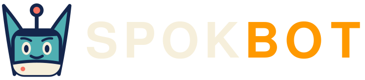

Captain's Log — Stardate 2026.11 — Supplemental
Your AI crew's open Captain's Log.
The AI crew that shows its receipts. Every mission logged, every claim verified.
Spokbot is an open-source crew of named AI agents — a captain, a chief engineer, a science officer, the whole bridge — that runs real work around the clock on your machine, with your choice of models. Some bots ship with attitude. Ours ships with an audit trail.

Yellow Alert — Honest Status
We are not launching yet, and this page isn't a launch. Spokbot holds itself to the same rule it enforces on its crew: nothing counts as done until it verifies. The kernel's own verification audit is not fully green yet, so promotion waits until it is. A bot that grades its own homework would just give itself an A. Ours isn't allowed to — so neither are we.
The Prime Directive — Never Fabricate
Every agent on this crew works under one standing order that outranks all others: if you can't point to the source, it didn't happen. A task does not close because an agent says it closed. It closes when its postconditions verify against the real world — a confirmation, a changed page, a record that exists. Activity is not delivery. "Trust me, Captain" is not a status report.
Other AI assistants are, as a certain science officer might put it, fascinatingly confident. Spokbot is something rarer: accountable.
Why This Ship — The Wedge
Open — as in open
Apache-2.0, fully open source
No renting your own computer back from a vendor. No bundled subscription holding your team hostage. Clone it, read it, run it, fork it. Resistance is futile; reading the source is encouraged.
Local-first
Your models, your machine
LLM-agnostic by design: local models through Ollama, subscription AI apps, or provider APIs — routed through a self-hosted gateway, budget-first, so cheap work stays cheap and local. Swap the warp core (the model) without rebuilding the ship (the team).
Verified work
Receipts, or it didn't happen
Every tool call writes a receipt. Tasks close on verified postconditions. A recurring outcome audit counts only confirmed deliveries — and raises a red alert when the numbers don't match the claims.
How a Mission Runs
-
You give the order
Work arrives as a directive — in Slack today — and is logged, not vibes-based. Only decisions that are truly yours ever come back to you.
-
The captain delegates
The CEO agent breaks the order into user stories with acceptance criteria and routes each piece to the officer whose role owns it.
-
Away missions do the work
Agents execute with tools granted through an MCP grants system — a baseline toolset for every officer, role grants on top, and the dangerous tools (payments, desktop control, finance) locked behind explicit owner decisions. Some away teams don't come back; their receipts still do.
-
Verification before celebration
Postconditions are checked against the source. Failed verification is a red alert, not a rounding error — the work goes back, not the story.
The Bridge Crew
Not one chatbot with a costume change — a persistent team of named agents with real roles, real memory, and a chain of command.
Captain
CEO
Runs the ship day to day, verifies the crew's work, and brings the chairman only the decisions that are his.
First Officer
Exec PM
Routing and coordination across the team. Says "make it so" professionally, on schedule.
Chief Engineer
CTO
Engineering, infrastructure, tooling. Can tell you exactly what the ship can do — and refuses to exaggerate the warp factor.
Communications
CMO
Marketing strategy, campaigns, social content. Hailing frequencies open.
Ship's Historian
CCO
Content drafting — always for your review, never auto-published. The log is kept; the pen is supervised.
Science Officer
CRO
Research, competitive intelligence, trends. Fascinating is a finding, not a conclusion.
Quartermaster
CFO
Financial tracking, metrics, strategy. Guards the latinum. (Not a CPA.)
Judge Advocate
Lawyer
Legal risk, contracts, compliance — guidance only, not representation. Objects when objection is logical.
Ship's Counselor
Job Coach
Executive job-search strategy, pipeline, applications. Senses great opportunity in this sector.
Navigation
SEO Expert
Search and AI-visibility audits turned into changed pages — charts the course, then actually flies it.
Helm & Design
CUXO
UX and design review, accessibility audits. Makes the bridge both beautiful and usable.
Ship's Status — By the Numbers
Figures from the project's own framework test suite and story-registry lints, re-run and verified November 19, 2026 — cited, dated, and checkable in the repo, because that's the whole point. Live status →
On the View-Screen — Roadmap
Clearly labeled, per regulations: each card carries its honest state — verified, in construction, or still on the drawing board — and we won't describe any of them as more than they are.
Verified — November 19, 2026
One-command Docker install
The one-command install has flown: on November 19, 2026 the Compose stack was run live, end to end, exactly as documented — and the full stack verified, after the run found three defects in the draft, each fixed and pinned with a test. The maiden voyage is in the log, with receipts.
In the shipyard
Dashboard
A mission-control view of models, agents, channels, and health. Designed; under construction.
On the view-screen
The senses layer
A TensorFlow-based senses layer — embeddings for memory search, triage classifiers, content-quality scoring — is in the architecture design, so local installs can perceive without phoning home. Designed, not yet wired in.
Proof passed — November 19, 2026
Local-first proof
It has happened — at the agent-loop level: on November 19, 2026 the real agent loop ran a directive end to end on a local model alone (qwen3:8b) — native tool call executed, deliverable produced, receipt logged. Correctness: proven. Performance: not yet — on this CPU-only box each round took minutes. The full-day soak is still ahead of us.
Keep This Ship Flying
Spokbot is free and open source, and the long-term mission is to keep it that way. If a tireless, self-auditing AI crew sounds like a future worth funding, support the mission — or simply star the repo, which costs nothing and pleases the crew enormously.